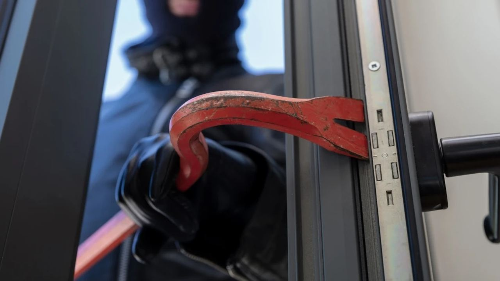
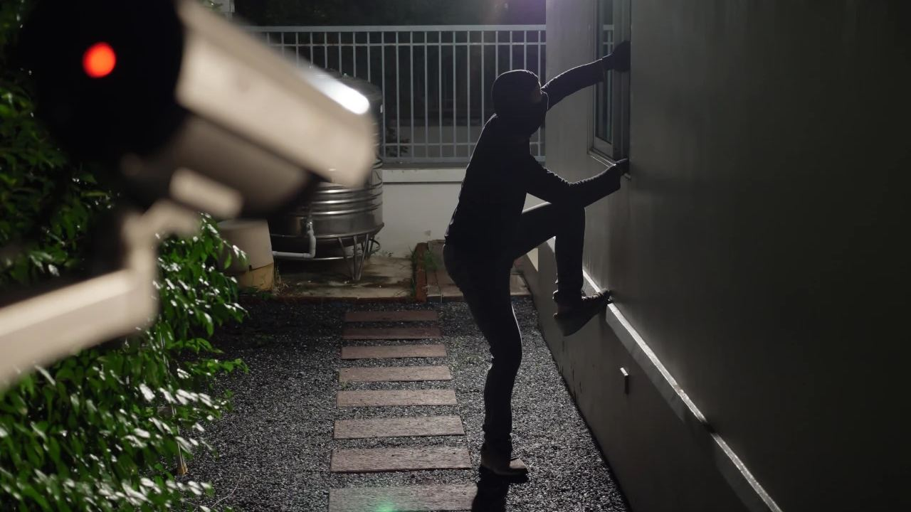
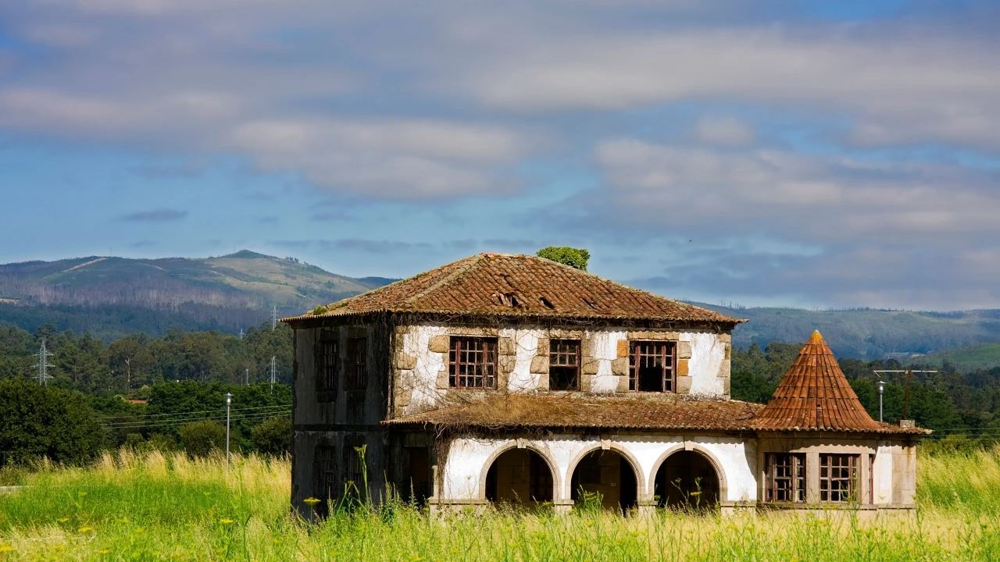

Buying in Spain · Legal
Squatters in Spain (Okupas) – Is There Anything to Fear When Buying Property?
 By Aleksandra Kobus · · updated · 3 min read
By Aleksandra Kobus · · updated · 3 min read

In short: Squatting is real but rare: in 2024 Spain recorded 16,426 complaints of squatting and break-ins, in a country of more than 26 million homes, and 42% of them were in Catalonia. Since April 2025 these cases go through fast-track trials. A well-chosen home in a busy coastal area or a gated community, with an alarm and regular visits, carries a very low risk.
Few topics worry foreign buyers as much as squatters, known in Spain as okupas. Headlines make it sound common. Here is what actually happens, what the law says now, and how to keep your home safe.
Who are okupas?
Okupas are people who move into a property without the owner's permission. The word comes from the Spanish ocupar, to occupy. The problem grew after the 2008 crisis, when many homes were repossessed and left empty.
Most cases involve empty flats owned by banks and investment funds, in big cities such as Barcelona and Madrid. A lived-in home, or a holiday home its owner uses regularly, is a much harder target.
What the law says
Spanish criminal law treats squatting in two ways:
- Allanamiento de morada (breaking into a dwelling, art. 202 of the Criminal Code): entering someone's home, including a second or holiday home. It carries 6 months to 2 years in prison.
- Usurpación (art. 245): occupying an empty property that is nobody's home, such as a repossessed flat. It is punished with a fine.
If the police catch squatters in the act, they can remove them on the spot. A 2020 Interior Ministry instruction tells officers to act quickly when a home, including a second home, is broken into. You will often read about a "48-hour rule", but there is no such deadline in law. What matters is reporting it straight away.
Since 3 April 2025, both offences go through the fast-track trial procedure (juicio rápido), under Organic Law 1/2025. Cases that used to take months are meant to reach court within about two weeks, although in practice it depends on the local court.
Squatters are not the same as tenants who stop paying
A tenant who signed a contract and stops paying is not an okupa. That is a civil matter, handled through an eviction claim (desahucio), and it usually takes longer. If you plan to rent out, a good rental contract, checks on the tenant and rent-default insurance matter more than fear of squatters.
How to protect your property

- Choose the location well. Busy coastal towns and gated communities with a concierge or security are rarely affected.
- Fit an alarm with monitoring and a security door. A monitored alarm is also proof of when an intrusion happened.
- Keep it lived in. Visit regularly, rent it out or ask a property manager to check it. Empty, unchecked homes are the main target.
- Keep your papers ready. Your title deed (escritura) and utility bills prove the home is yours and lived in.
- Get insurance with legal cover. Many home policies include legal help and cover for occupation.
- Talk to the neighbours and the community administrator, so someone notices if something is wrong.
What about the Costa Blanca and Costa del Sol?

Squatting is concentrated in big cities and in empty bank-owned stock. Coastal resorts are busy most of the year, and new developments usually have gated access and cameras. That keeps the risk low for a holiday home that is looked after.
The places to be careful with are isolated, long-empty houses and repossessed flats sold cheaply. An agent who knows the area will steer you away from these.
Frequently asked questions
How common are squatters in Spain?
In 2024 there were 16,426 complaints of squatting and break-ins in the whole of Spain, which has more than 26 million homes. About 42% were in Catalonia.
Can the police remove squatters straight away?
Yes, if they are caught in the act or the home is clearly someone's dwelling and it is reported immediately. Otherwise a judge decides, now through the fast-track procedure in force since April 2025.
Does a holiday home count as a dwelling?
Yes. A second or holiday home its owner uses counts as a dwelling, so breaking into it is the more serious offence of allanamiento de morada.
Buying with peace of mind
Squatters should not stop you buying in Spain, but they are a good reason to choose the right area and keep your home looked after. Ask us which developments and neighbourhoods we recommend, and how owners there protect their homes.
Sources: Ley Orgánica 1/2025 (BOE) · Código Penal, arts. 202 and 245 (BOE) · Interior Ministry crime statistics